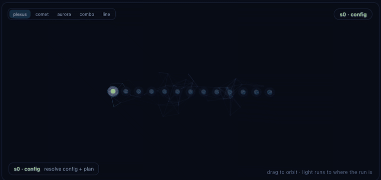

Drive every issue to merged — on one fixed backbone.
keel turns coding agents into work owners. A project-neutral, multi-agent workflow backbone drives a GitHub issue from intake to done — projects never fork the backbone; they set values and snap their own Lego into named slots.
pip install keel-workflow
In Claude Code? Install it as a plugin — no pip required:
>/plugin install keel
Or pin a release:
$pip install "git+https://github.com/berkayturanci/keel@v1.8.2"


Optional companion —
keel-visual:
an animated 2D/3D visualizer that renders any run from the ledger it already writes.
Terminal play / dash and a web render.
keel-visual on PyPI →
What it is
An agentic work-ownership backbone
keel is based on the work pattern of a strong teammate in a real engineering team: take an issue from the queue, decide whether it's ready, own the implementation, get it reviewed, keep the quality gates green, merge inside policy, and leave useful memory behind for the next session. It is not another isolated coding command, review bot, or merge queue — it's the spine that makes an agent accountable for the whole path.
What you get
keel merge path — resource claim, window re-check, live CI rollup, and PR evidence verification before the merge — plus the timezone-aware night no-merge window, mkdir merge lock, risk-tier → reviewer count, hotfix bypass with an audit line, and vendor+model attribution.The backbone
One fixed, ordered step machine
Every unit of work travels the same 13 steps — s0 config through s12 close. Every step exposes add-only extension slots — 28 named slots in total — where a project snaps in its own gates and steps; slots can extend the machine but never reorder or remove it, and invariants like the merge lock and window can't be overridden. Below: the safety primitives pinned to the spine, and which command covers which steps — hover a step for its slots, hover a command strip to see its span.
The ordered step machine
| step | name | does | primary hooks |
|---|
hook all 28 hooks are add-only extension slots — every step exposes them; a project snaps in its own Lego and can never reorder or remove the machine. agent the step's work is produced by a coding agent (Claude Code, Codex, Gemini, …) — but only the orchestrator writes to git/PRs. hook amber hooks are primary slots that can own or shape the step's outcome (after-implement, reviewers, capture, post-merge); grey ones are passive before/after points that observe without gating. guard ⊘ red slots can block the run — guard (s3), tester / test (s8) and pre-merge (s10) stop work when their checks fail.
Invariants the backbone always preserves
How it compares
Between three tool categories
keel is not trying to replace coding agents, PR reviewers, or merge queues — it's the work-ownership backbone that can use all three in one lifecycle.
Visual
See every run — 2D & 3D
keel-visual is an optional companion that renders any run from the ledger keel already writes — no extra wiring. A 2D flow and an animated 3D scene, in the terminal or the browser.

ship run on the review step — the combined 3D style, with the cross-vendor jury orbiting s7.play (live with --follow, looping demo with --loop), a dash board of every active worktree, and a self-contained web render.keel ship by hand, from an agent (Claude Code), or in CI. When an agent drives the run, you watch it alongside: play --follow in your own terminal, or render in a browser (no tty needed). How to watch →dash --all (terminal) and render --all (web) point at a parent folder and aggregate every keel project under it into a single board, grouped by project. The web board has a 2D grid / 3D scene toggle, follows your system light/dark theme, and an all / active filter fades and hides finished runs to keep live work in focus. It shows ship runs and non-ship commands (triage, morning, pr-loop …) live via the keel activity channel, each with its own phases. Local-only, fail-soft, one level deep.plexus (default), comet, aurora, combined and line — switch them from the in-scene selector. Same colours, different geometry./keel:<command> flows render their own phases from keel.flows. See the gallery →--follow shows the jury status live; --theater hands off to ai-jury's deliberation theater at the review step, then resumes. Fail-soft — no jury installed, nothing animates, nothing errors.pipx install keel-visual — pulls in keel-workflow (core) automatically. On PyPI.Learn more
docsThe visualizer reference, ship deep-dive, and the 16-command gallery. keel-visual docs →pypiDownload and version history. pypi.org/project/keel-visual →16 workflows · /keel:<command>
Pick a command, watch it run
These are the agentic flows — every one is project-neutral: behaviour comes only from that repo's .keel/project.yaml. Select any of the 16 — its scene plays a scripted run, with its arguments and flags below.
Examples are illustrative — each command reads its values from .keel/project.yaml. Install them with keel install-adapter all or the Claude Code plugin.
The deterministic core
The keel CLI
The CLI does the deterministic work — config resolution, gate planning & execution, risk-tier classification, merge window + lock, the fail-closed keel merge pipeline, evidence verification, checkpoint / resume and run controls. The workflow commands above are the agentic flows layered on top. Every flag is documented in the parameter reference.
keel setup --root . # one command: init + adapters + validate + plan
keel validate <cfg> # check against the schema
keel plan <cfg> # render the backbone
keel ship <cfg> --root . # dry assessment → decisionLayer 2 · values, not copied commands
Configured with a small project.yaml
A keel consumer is driven by values. Unknown keys are rejected by the bundled schema, so the reference is intentionally strict.
core: "^1.0"
base_branch: main
timezone: Europe/Istanbul
merge_window: "07:00-01:30"
gates:
build: make test
lint: make lint
extensions: # add-only Lego
pre-merge:
- design-parity-gate
policy_pack:
labels: [bug, feature, flake]
tier3_globs: ["src/keel/orchestrator.py"]Dogfooding
keel ships itself
keel's own config is .keel/project.yaml, and CI runs keel on keel-core on every push. If a gate fails, keel blocks its own merge — the same backbone every consumer gets. Here's the dry assessment, live.
Security
No telemetry, no surprises
keel's deterministic core makes no network calls of its own and ships a single runtime dependency (PyYAML; on Windows it also installs tzdata for the standard-library timezone database). It collects and transmits no telemetry — the only outbound activity comes from the gate commands and agent CLIs you explicitly configure.
run-gates / ship execute the build / lint / command Lego from your config. Review a config before running it on a sensitive repository — exactly as you would a Makefile or CI script.Security audits — published in the repo
2026-06-11v1.2.1 line — no findings; prior follow-ups verified resolved. report →2026-06-09v1.0.1 line — secret scanning and consumer-neutrality follow-ups (resolved). report →2026-06-08Initial audit — trust boundaries, bandit, pip-audit, workflow & permission review. report →Each report covers source-level trust boundaries, static analysis (bandit), dependency scanning (pip-audit), workflow / permission review, and the repository's GitHub security settings. Full policy: SECURITY.md
FAQ